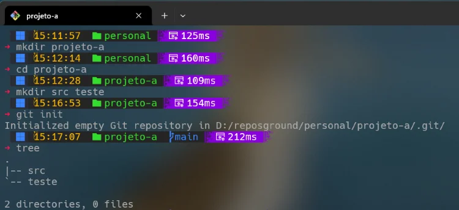

git init
O comando git init é o ponto de partida para qualquer projeto versionado com Git.
Ele cria um novo repositório Git vazio no diretório atual ou reinicializa um repositório já existente.
A partir desse momento, o Git passa a acompanhar as mudanças nos arquivos, permitindo histórico,
controle de versões e colaboração.

A imagem mostra a criação de um diretório chamado projeto-a e a execução do comando
git init. Após o comando, o Git cria automaticamente a branch inicial
chamada main (ou master em versões antigas). O ícone de “ramo” indica que o
repositório foi inicializado com sucesso.
O comando git init cria a estrutura interna necessária para que o Git
acompanhe alterações no projeto. É o primeiro passo para começar a versionar qualquer diretório.
Por padrão, o Git cria a branch inicial chamada main. Porém, você pode definir outro nome usando:
git init --initial-branch=desenvolvimentogit init -b meu-branch-principalIsso é útil quando sua equipe segue uma convenção específica para o nome da branch principal.